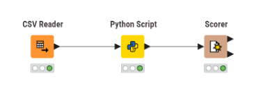
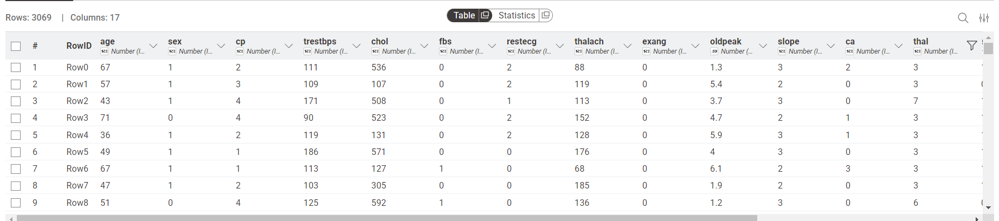
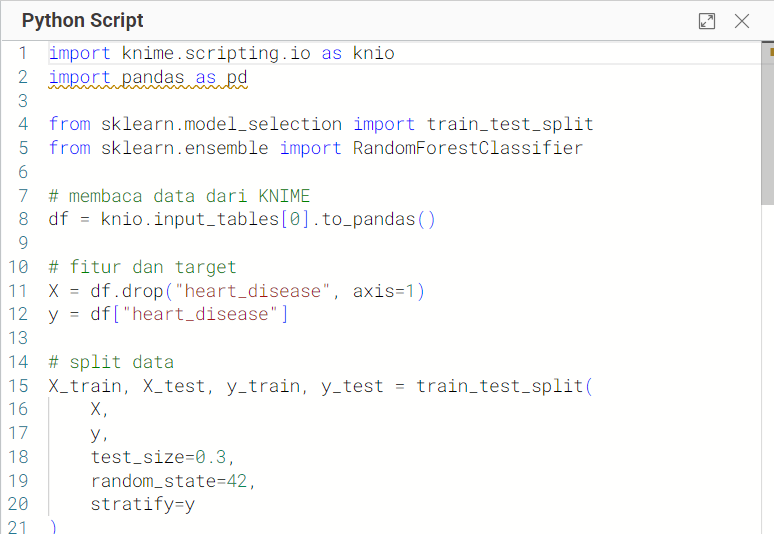
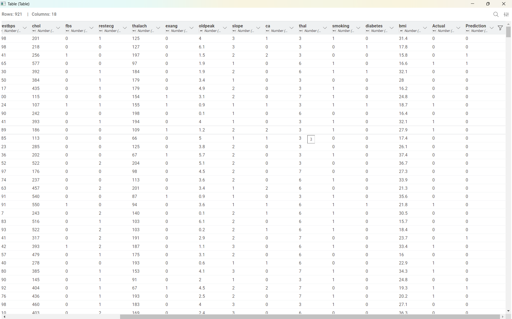
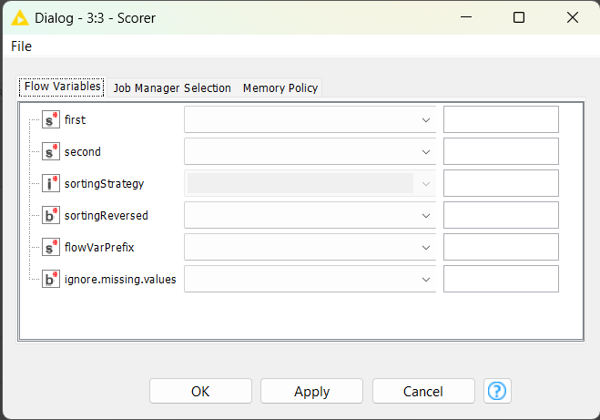
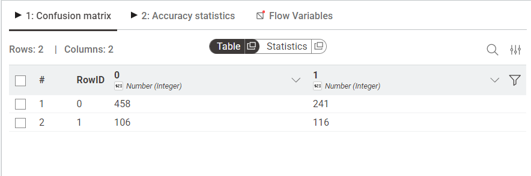
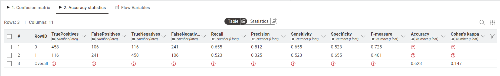

Random Forest Heart Disease Classification#
Dataset#
Dataset yang digunakan pada penelitian ini adalah Heart Disease Dataset. Dataset ini digunakan untuk melakukan klasifikasi apakah seseorang memiliki penyakit jantung atau tidak berdasarkan kondisi medis pasien.
Dataset terdiri dari beberapa atribut medis seperti umur, tekanan darah, kadar kolesterol, detak jantung, dan atribut kesehatan lainnya.
Label target pada dataset:
0= Tidak memiliki penyakit jantung1= Memiliki penyakit jantung
Berikut beberapa atribut pada dataset:
No |
Nama Fitur |
Deskripsi |
|---|---|---|
1 |
age |
Umur pasien |
2 |
sex |
Jenis kelamin |
3 |
cp |
Tipe nyeri dada |
4 |
trestbps |
Tekanan darah |
5 |
chol |
Kolesterol |
6 |
thalach |
Detak jantung maksimum |
7 |
oldpeak |
Depresi ST |
8 |
bmi |
Body Mass Index |
9 |
smoking |
Status merokok |
10 |
diabetes |
Riwayat diabetes |
11 |
heart_disease |
Label klasifikasi |
Implementasi Pada KNIME#
Workflow ini dirancang menggunakan aplikasi KNIME dengan bantuan Python Script dan library sklearn untuk membangun model klasifikasi Random Forest.

1. CSV Reader#
Node CSV Reader digunakan untuk membaca dataset Heart Disease yang berformat CSV agar dapat diproses pada workflow KNIME.

2. Python Script#
Node Python Script digunakan untuk melakukan seluruh proses machine learning menggunakan library sklearn.
Pada tahap ini dilakukan:
pembagian data training dan testing
proses training model Random Forest
proses prediksi data testing
Berikut implementasi Random Forest menggunakan sklearn:
import knime.scripting.io as knio
import pandas as pd
from sklearn.model_selection import train_test_split
from sklearn.ensemble import RandomForestClassifier
# membaca data dari KNIME
df = knio.input_tables[0].to_pandas()
# fitur dan target
X = df.drop("heart_disease", axis=1)
y = df["heart_disease"]
# split data training dan testing
X_train, X_test, y_train, y_test = train_test_split(
X,
y,
test_size=0.3,
random_state=42,
stratify=y
)
# model Random Forest
model = RandomForestClassifier(
n_estimators=100,
criterion='entropy',
random_state=42
)
# training model
model.fit(X_train, y_train)
# prediksi
y_pred = model.predict(X_test)
# membuat output
output_df = X_test.copy()
output_df["Actual"] = y_test.values
output_df["Prediction"] = y_pred
# kirim output ke KNIME
knio.output_tables[0] = knio.Table.from_pandas(output_df)

Konsep Random Forest#
Random Forest merupakan metode ensemble learning yang membangun banyak decision tree dan menggabungkan hasil prediksi dari seluruh tree menggunakan voting mayoritas.
Metode ini memiliki kelebihan:
akurasi lebih baik
lebih stabil
mengurangi overfitting
Entropy#
Entropy digunakan untuk mengukur tingkat ketidakpastian data.
Information Gain#
Information Gain digunakan untuk menentukan atribut terbaik pada proses pemisahan node.
Random Forest Prediction#
Model Random Forest yang telah dilatih digunakan untuk melakukan prediksi terhadap data testing.
Hasil prediksi menghasilkan:
kolom Actual
kolom Prediction

3. Scorer#
Node Scorer digunakan untuk mengevaluasi performa model klasifikasi dengan membandingkan hasil prediksi dan data aktual.

Confusion Matrix#
Confusion matrix digunakan untuk mengetahui jumlah:
True Positive
True Negative
False Positive
False Negative

Accuracy#
Akurasi digunakan untuk mengukur tingkat ketepatan model dalam melakukan klasifikasi.

Kesimpulan#
Berdasarkan hasil implementasi menggunakan metode Random Forest dengan library sklearn pada KNIME, model mampu melakukan klasifikasi penyakit jantung dengan tingkat akurasi yang baik.
Penggunaan sklearn memungkinkan proses machine learning dilakukan secara lebih fleksibel dan mendekati implementasi data science di dunia nyata.
Metode Random Forest mampu meningkatkan stabilitas model karena menggunakan banyak decision tree dalam proses klasifikasi sehingga hasil prediksi menjadi lebih akurat dan mengurangi kemungkinan overfitting.